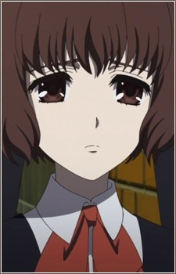

Najlepsze anime zimę 2012!

Another
Kouichi Sakakibara przyjeżdża do rodzinnego miasta swojej mamy, która zmarła 15 lat wcześniej. Niestety wkrótce po przyjedzie trafia do szpitala z
powodu choroby płuc. Gdy wraca do zdrowia, zostaje przydzielony do klasy mieszczącej się w Północnym Gimnazjum Yomikita. Wraz z nim na zajęcia
uczęszcza Misaki Mei – cicha dziewczyna nosząca opaskę na lewym oku. Od niej bohater dowiaduje się o pewnym zdarzeniu mającym miejsce 26 lat
wcześniej – uczeń nazwiskiem Misaki ginie w nieszczęśliwym wypadku. Był powszechnie lubiany, więc klasa z trudem radzi sobie z jego śmiercią.
Pewnego dnia postanawiają zachowywać się tak, jakby ich kolega nigdy nie zginął.. Od tego momentu uczniów feralnej klasy oraz ich najbliższych
zaczynają prześladować tajemnicze zdarzenia. Ginie coraz więcej osób, a w miasteczku zaczyna krążyć przekonanie, że to wszystko wina klątwy.
Nietrudno się domyślić, że właśnie do tej klasy trafia Sakakibara, który będzie chciał rozwiązać zagadkę tajemniczych zgonów. Nie będzie mu jednak
łatwo, ponieważ zaprzyjaźnia się z Misaki, a to nie podoba się pozostałym uczniom. Gdy zabrzmi pierwszy dzwonek, rozpocznie się wyścig z czasem,
by zatrzymać klątwę…
W 1972 roku Misaki, uczeń klasy 3-3 gimnazjum północnego w Yomiyamie, ginie w wypadku w ciągu roku szkolnego. Klasa, bardzo zasmucona jego nagłą śmiercią, postanawia razem z nauczycielami zachowywać się jakby Misaki wciąż żył, co na koniec
roku prowadzi do tego, że Misaki pojawia się na wspólnym zdjęciu wykonanym na koniec roku. Wiosną 1998 roku, 15-letni Kōichi Sakakibara przenosi się do klasy 3-3 w tym gimnazjum, gdzie spotyka Mei Misaki, której wydaje się nikt nie zauważać.
Wkrótce odkrywa, że na jego klasie ciąży klątwa, której ofiary (zarówno uczniowie jak i ich krewni) giną przypadkową i bezsensowną śmiercią. Odkrywając, że te dziwne przypadki śmierci są powiązane w jakiś sposób z Misakim z 1972 roku, Kōichi
razem z Mei próbuje znaleźć przyczynę i rozwiązanie klątwy, zanim ta ich zabije.
Główni bohaterowie anime
Kouichi Sakakibara
Piętnastoletni bohater. Mieszkał w Tokio, ale z powodu choroby płuc zmuszony był przenieść się do miasta Yomiyama.
Mei Misaki
Główny bohater. Koichi spotyka ją po raz pierwszy w windzie szpitala. Dobrze rysuje, należy do kręgu artystycznego.

Aki Matsui
Cichy i nieśmiały uczeń w klasie 3-3 i dobry przyjaciel Anzu Kanaki.
Aya Ayano
Kolega z klasy Kouichiego. Wesoła, słodka i towarzyska dziewczyna; Izumi idzie z Izumi do klubu teatralnego.